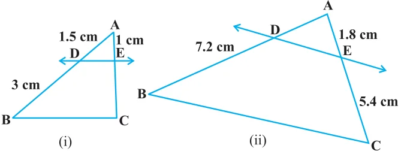
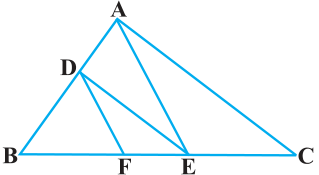
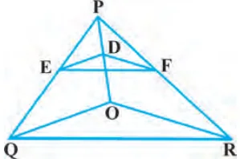
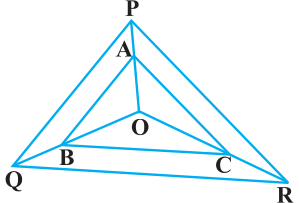

Fig. 6.17
- 2.E and F are points on the sides PQ and PR
respectively of \(a \triangle PQR\). For each of the following cases, state whether EF || QR :
- (i)\(PE = 3.9\) cm, \(EQ = 3\) cm, \(PF = 3.6\) cm and \(FR = 2.4\) cm
- (ii)\(PE = 4\) cm, \(QE = 4.5\) cm, \(PF = 8\) cm and \(RF = 9\) cm Fig. 6.18
- (iii)\(PQ = 1.28\) cm, \(PR = 2.56\) cm, \(PE = 0.18\) cm and \(PF = 0.36\) cm
- 3.In Fig. 6.18, if LM || CB and LN || CD, prove that

\(\frac{AM}{AB} = \frac{AN}{AD} \cdot\)
- 4.In Fig. 6.19, DE || AC and DF || AE. Prove that
\(\frac{BF}{FE} = \frac{BE}{EC} \cdot\)
Fig. 6.19
- 5.In Fig. 6.20, DE || OQ and DF || OR. Show that

EF || QR.
- 6.In Fig. 6.21, A, B and C are points on OP, OQ and
OR respectively such that AB || PQ and AC || PR. Show that BC || QR.
- 7.Using Theorem 6.1, prove that a line drawn through
the mid-point of one side of a triangle parallel to another side bisects the third side. (Recall that you Fig. 6.20 have proved it in Class IX).

- 8.Using Theorem 6.2, prove that the line joining the
mid-points of any two sides of a triangle is parallel to the third side. (Recall that you have done it in Class IX).
- 9.ABCD is a trapezium in which AB || DC and its
diagonals intersect each other at the point O. Show
that \(\frac{AO}{BO} = \frac{CO}{DO} \cdot\) Fig. 6.21
- 10.The diagonals of a quadrilateral ABCD intersect each other at the point O such that